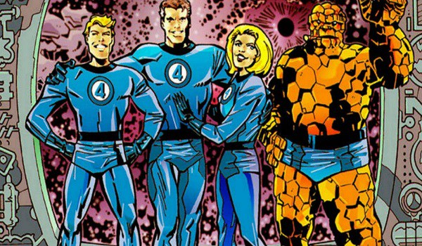
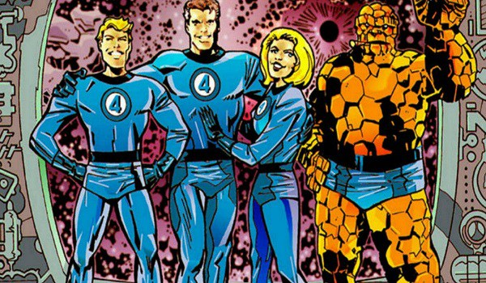

En octubre de 2022 empezamos un curso de desarrollo web en CoderHouse donde aprendimos todo lo relacionado con sitios web. La idea surgió por lo original que nos pareció un blog sobre el cómic americano, ya que últimamente las nuevas generaciones prefieren más el manga y el ánime.
 

La historia de nuestro fundador
Tobias Bruckner nació el 5 de mayo de 2002 en Buenos Aires, Argentina. A temprana edad tuvo su primer acercamiento con los cómics cuando su padre lo llevó a una tienda de su barrio. Al ser fan de Star Wars terminó llevandosé "Star Wars: Darth Vader Vol. 1", esto fue el principio de una larga obsesión que sigue vigente hasta el día de hoy. Con el paso de los años empezaron a interesarle más las historias de Marvel, principalmente Spiderman, X-men, Cápitan América, entre otros. Al llegar a una edad más madura siguió con contenido más serio y oscuro, primero empezó con las historias más famosas de su héroe favorito: Batman, luego algunas obras de Neil Druckman (Sand Man en su mayoría), y en la actualidad disfruta de las obras maestras de Alan Moore (su autor favorito). La idea de crear algo en conjunto que hablara de cómics le surgió cuando su padre le recomendó inscribirse a un curso de desarrollo web para que allí pudiera aprender a crear un espacio donde se pueda debatir de cómics y pasarla bien.